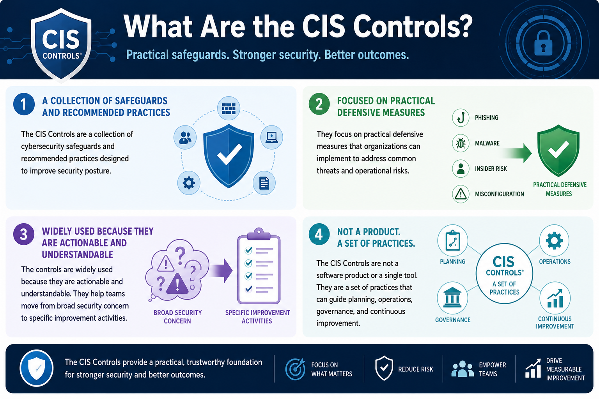

What Are the CIS Controls?
What Are the CIS Controls?
Connecting to LMS... Progress: in progress
Version 1.0 | Date: 2026-06-16 | Educational guidance for understanding CIS Controls concepts.

Narration
The CIS Controls are a collection of cybersecurity safeguards and recommended practices designed to improve security posture.
They focus on practical defensive measures that organizations can implement to address common threats and operational risks.
The controls are widely used because they are actionable and understandable. They help teams move from broad security concern to specific improvement activities.
The CIS Controls are not a software product or a single tool. They are a set of practices that can guide planning, operations, governance, and continuous improvement.